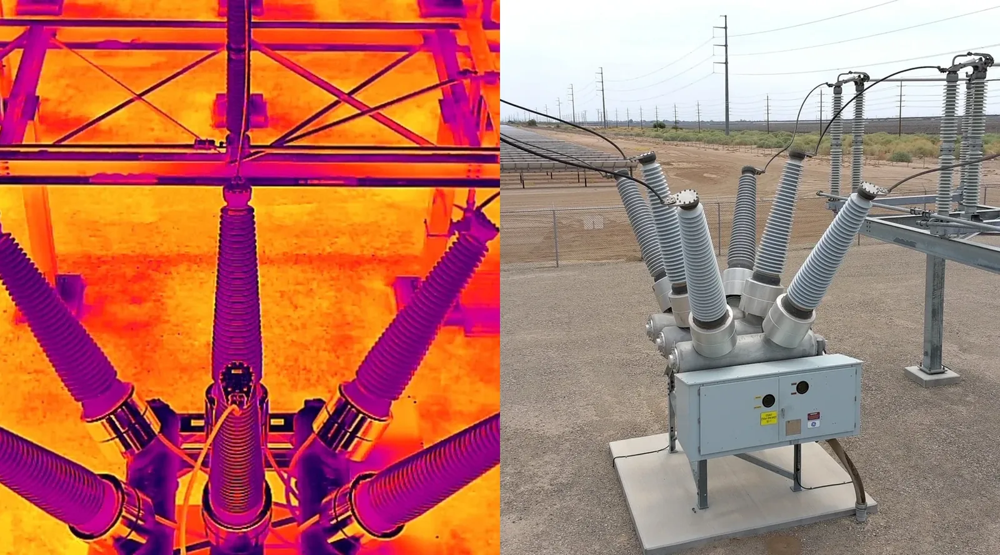
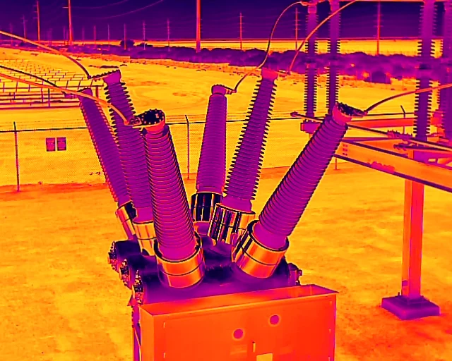
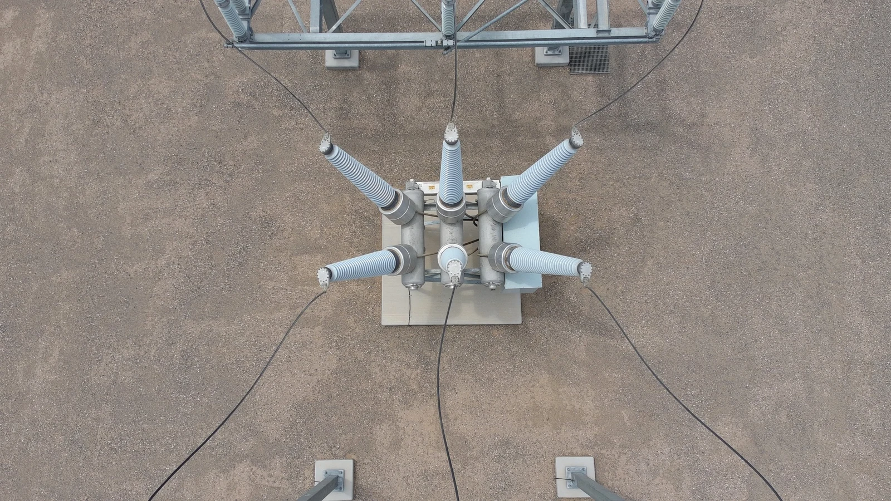
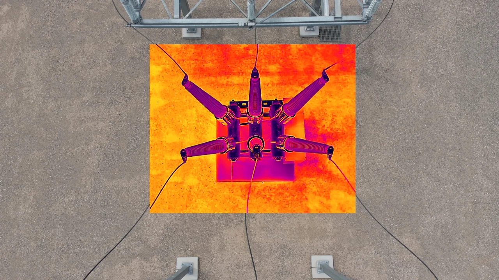
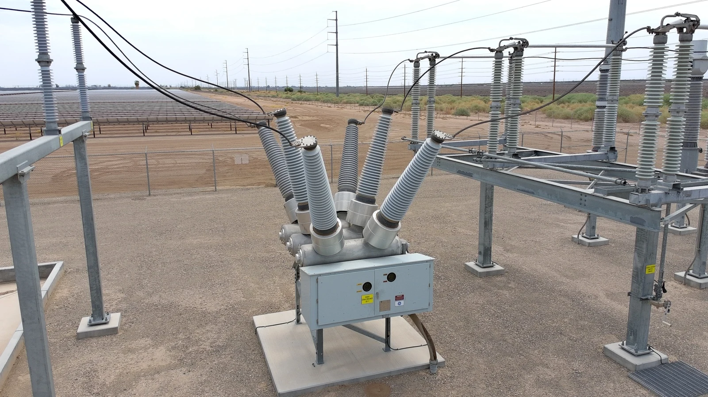
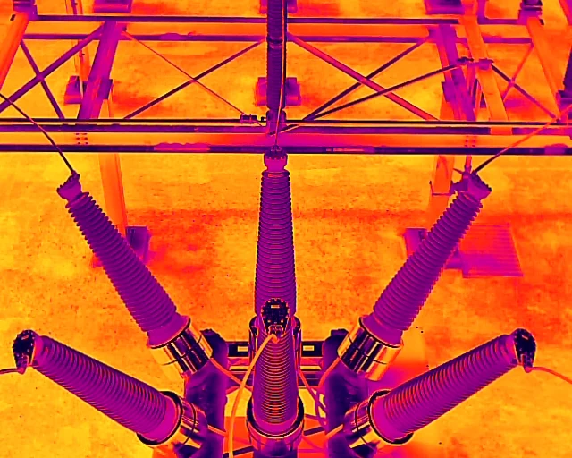

Electrical Infrastructure
Aerial visual and thermal inspection of breakers, bushings, transformers, disconnects, structures, conductors and accessible distribution equipment.

Professional drone inspections for electrical infrastructure, renewable-energy assets, industrial facilities and commercial properties—supported by radiometric imagery, field analysis and customer-ready reports.
The aircraft and sensors are tools. The value comes from understanding electrical equipment, operating conditions, thermal patterns and field risk.
Aerial visual and thermal inspection of breakers, bushings, transformers, disconnects, structures, conductors and accessible distribution equipment.
Module, tracker, combiner, inverter, transformer, vegetation, drainage and site-condition documentation for renewable-energy facilities.
Radiometric imagery used to evaluate phase balance, connection heating, abnormal gradients and equipment condition under operating load.
Safer visual documentation of rooftop electrical equipment, solar systems, penetrations, storm damage and inaccessible building areas.
Repeatable aerial documentation for owners, contractors, insurance, quality control, milestones and closeout records.
Rapid documentation following equipment failures, storms, fires, flooding or access-restricted incidents.
Switch between inspection modes to understand how the same asset can be evaluated from multiple perspectives.

This example demonstrates the reporting method without identifying the customer, facility, exact asset designation or personnel.
Drone-mounted radiometric infrared and visual imaging from overhead and oblique angles.
Electrical asset energized and operating under normal load during high ambient temperature and full sun.
Phase-to-phase comparison, connection uniformity, bushing gradients, housing temperature and visual condition.
No elevated connection, localized hot spot or abnormal thermal gradient was identified.




No corrective action was indicated by the sample inspection. The imagery can be retained as a baseline and compared with future scans, especially after loading or operating conditions change.
Planned visual and thermal data collection based on site conditions, operating status and inspection objectives.
Organized visible, thermal and blended imagery with meaningful comparisons and field context.
Condition classifications, observations, limitations and recommended next steps.
Professional PDF summary with selected images, captions, findings and recommendations.
Utility-scale generation, storage, field equipment and balance-of-system documentation.
Visual and thermal support for elevated, energized and difficult-to-access electrical assets.
Pump stations, motor systems, electrical distribution, canals and remote facilities.
Electrical infrastructure, process equipment, roofs, yards and construction documentation.
Rooftop equipment, solar arrays, building envelope observations and progress reporting.
Pumping infrastructure, remote assets, large properties, drainage and site-condition imagery.
Identify assets, operating condition, inspection objective, site restrictions and required deliverables.
Review access, airspace, weather, safety controls and the required visual and thermal perspectives.
Collect repeatable imagery while documenting load, ambient conditions and relevant field observations.
Compare phases, components, visible condition and thermal behavior while accounting for environmental influence.
Provide selected images, findings, classifications, recommendations and a digital record.